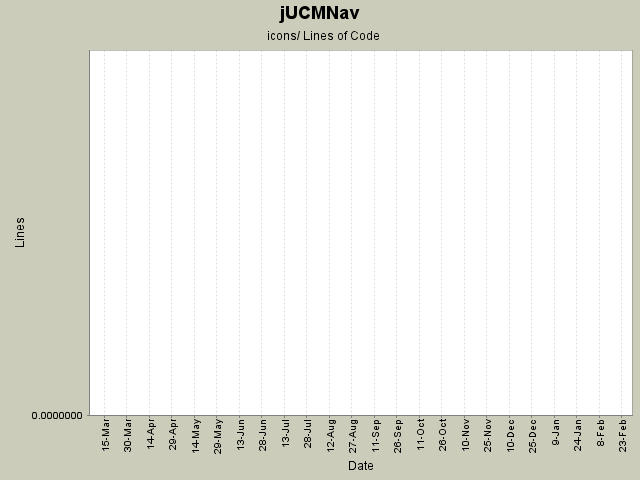

Summary Period: 2005-03-11 to 2006-02-22
[root]/icons

Total Lines Of Code:
0 (2006-03-31 18:01)
| Author | Changes | Lines of Code | Lines per Change |
|---|---|---|---|
| Totals | 22 (100.0%) | 0 (-) | 0.0 |
| jpdaigle | 9 (40.9%) | 0 (-) | 0.0 |
| jkealey | 2 (9.1%) | 0 (-) | 0.0 |
| jfroy | 3 (13.6%) | 0 (-) | 0.0 |
| etremblay | 8 (36.4%) | 0 (-) | 0.0 |
Ended name change.
0 lines of code changed in:
Evaluation scenario view added.
0 lines of code changed in:
Integrate Steve Hutchison's excellent new logo image as small icons (no text).
0 lines of code changed in:
Icons v2 - look a little choppy, maybe we should round them out in the lower-right corner.
0 lines of code changed in:
New icons: we can use these freely without fear of copyright violations.
Restart Eclipse with the clean option to do a fresh rebuild of your plugin icons.
0 lines of code changed in:
- Can now double click on static stub to open the associated map.
- To change the associated map of a static stub, select a stub and select a map from the list in the Connect Map section of the Stub Bindings view.
- This view is far from finished. It's more a prototype right now that will evolve to a final version. Eclipse Forms layouts are really not fun. The view currently only work for static stubs. The actions done when you add a plugin is not a command, so use the view at your own risk right now...
- New icons for dynamic stubs, path tool 24, bindings.
0 lines of code changed in:
- Hover feedback sur les empty point et stubs.
- Selection feedback sur les stubs.
- Maintenant très facile d'ajouter du feedback sur n'importe qu'elle
figure extendant PathNodeFigure. Simplement overwriter les méthodes
setSelected ou setHover dans les sous-classes de PathNodeFigure pour
donner le comportement voulu. Voir les figures de stubs et de empty
point pour des exemples.
- JoinStartToStub command working (redo/undo). Drag and drop d'un
start point sur un stub. (produit un nouveau in pour le stub).
- JoinEndToStub command working (redo/undo). Drag and drop d'un end
point sur un stub (produit un nouveau out pour le stub).
- Le Stub peut donc avoir plusieurs in/out sans aucun problème (le
connection router n'a pas explosé et n'a pas eu besoin de
changement!!)
0 lines of code changed in:
bug 238; new attempt at fixing images. 98% sure I found the bug.
0 lines of code changed in:
The perspective is now actually doing something. You'll have to reset your perspective in your runtime workbench to see a difference.
New file wizard for UCM files.
New responsibility view that does nothing at the moment... But the skeleton is there for future devellopement.
0 lines of code changed in:
- New icon for files
- New Polygon figure class if you want to make arbitrary filled figure (draw2d doesn't have one)
- Can insert a stub in the diagram from the palette.
0 lines of code changed in:
Added the class to implement the perspective with the icon for it.
0 lines of code changed in:
- Bug 102 fixed.
- User can now insert more than one responsibility or empty point in a row.
- Added some comments in BSplineConnectionRouter.
0 lines of code changed in:
Generated by StatCVS 0.2.4